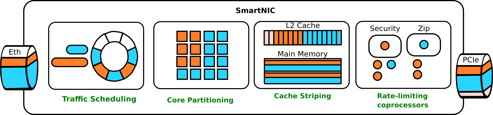
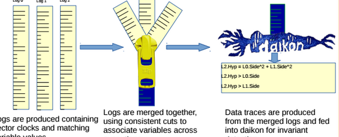
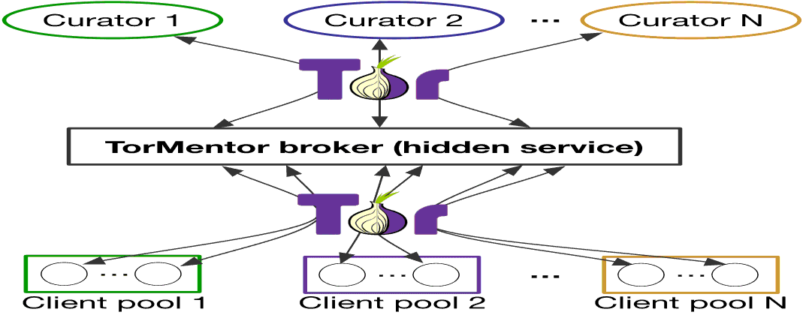
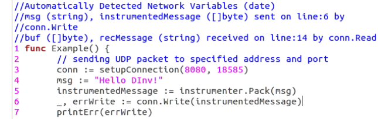

About
I am in year of my PhD at the University of California San Diego working with Alex Snoeren as part of the SysNets Group. My Research interests are at the intersection of distributed systems, networking, and operating systems. Prior to attending UCSD I completed an undergraduate and master's degree, working with Ivan Beschastnikh, at the University of British Columbia in 2016, and 2018 respectively.
Publications
| Paper Bibtex |
Disaggregating Stateful Network Functions Deepak Bansal and Gerald DeGrace and Rishabh Tewari and Michal Zygmunt and James Grantham and Silvano Gai and Mario Baldi and Krishna Doddapaneni and Arun Selvarajan and Arunkumar Arumugam and Balakrishnan Raman and Avijit Gupta and Sachin Jain and Deven Jagasia and Evan Langlais and Pranjal Srivastava and Rishiraj Hazarika and Neeraj Motwani and Soumya Tiwari and Stewart Grant and Ranveer Chandra and Srikanth Kandula NSDI 2023 |
| Paper Bibtex Repository Poster Video (10) Video (20) |
In-network Contention Resolution for Disaggregated Memory Stewart Grant, Alex Snoeren WORDS 2021 |
| Paper Presentation Bibtex Repository |
SmartNIC Performance Isolation with FairNIC: Programmable Networking for the Cloud Stewart Grant ⛧, Anil Yelam⛧, Maxwell Bland, Alex Snoeren SIGCOMM 2020 (⛧co-first authors) |
| Paper Bibtex Repository |
Dancing in the Dark: Private Multi-Party Machine Learning in an Untrusted Setting Clement Fung, Jamie Koerner, Stewart Grant, Ivan Beschastnikh Published at ArXiv |
| Paper Bibtex Slides Repository Demo |
Inferring and Asserting Distributed System Invariants Stewart Grant, Hendrick Chech, Ivan Beschastnikh International Conference ICSE 2018 |
| Poster Abstract Repository |
Distributed Test Case Generation using Model Inference with Dara Stewart Grant, Ivan Beschastnikh Poster at NSDI 2018 |
| Poster Abstract |
Inferring likely data invariants of distributed systems Stewart Grant, Sam Creed, Ivan Beschastnikh Poster at SOSP 2015 |
Projects
|  |
Fairnic (Fair performance isolation on SOC SmartNICsFairnic enables Cloud providers to offload their tenants custom applications to SOC SmartNICS. Tenants can effect eachothers performace negativly if not isolated. FairNIC isolates bandwidth, caches, and hardware accelerators. |
Dara (distributed dynamic verification)Dara models distributed systems based soely on state traces. The model is verified using the SPIN model checker against user defined assertions. Dara's can infer new exections not present in input traces and check them for violations of safty and liveness conditions. |
|
|  |
Dinv (automatic distributed invariant detector)Distributed systems are complex and require meticulous development to correctly handle asynchronous execution, and partial failures. DInv is a tool for automatically detecting likely data invariants in distributed systems. Data invariants are useful for verifying the correctness of a system |

|
Distributed Clocks (vector clock library and instrumentation tool)Vector clocks are useful for reasoning about concurrency and developing protocols. DistributedClocks is an optimized vector clock library for Go, Java, C and C++. It also provides an instrumentation tool for automatically added vector clocks to programs using Go's net library. |
|  |
TorMentor (anonymous distributed machine learning)TorMentor is a collaborative machine learning framework that operates through Tor. TorMentor clients participate in a federated learning algorithm. Clients are protected from the de-anonymization of their data via differential privacy. |
|  |
Dovid (automatic distributed system documenter)Distributed systems can be difficult to understand from just reading source code. The most integral part of a distributed system is its network communication. Dovid automatically detects network communication and generates documentation for variables which either affect or are affected by network communication. |
Department Leadership
- Early Research Scholars Program (grad student lead) 2020-2021
- Faculty Candidate Student Panel Organizer 2019
- Effective Writing Group Organizer 2019-Present --- Summer '19 | Summer '20
Conferencing
- WORDS 2021 (Technical Track Author)
- SIGCOMM 2020 (Technical Track Author)
- SOSP 2019 (Atendee)
- ICSE 2018 (Technical Track Presenter)
- PNW PLSE 2018 (Presenter)
- NSDI 2018 (Poster Presenter)
- Splash 2017 (Voulenteer)
Interests
Extracurricularly, I enjoy rock climbing, juggling, Solving twisty puzzles and watching sumo. I also have a giant softspot for the art of, and influenced by the Preraphelite Brotherhood.